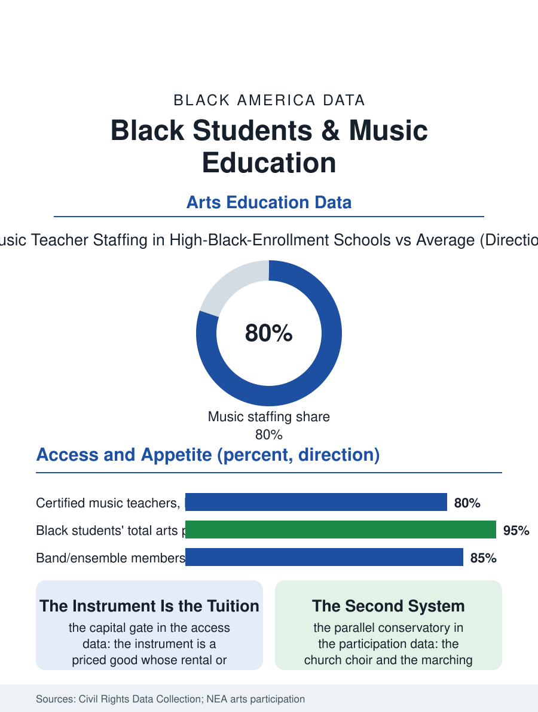

Black Education
The Second System: Black Students and Music Education
The heirs of American music attend schools with the thinnest music staffing, while the church and the marching band run a rigorous parallel system. The music file.

Music education is where the school curriculum meets the culture's deepest home advantage, and the access data show the predictable inversion: Black students, heirs of the tradition that authored American music, attend schools with thinner music staffing, fewer instruments, and less ensemble access than the national pattern, while their participation where the programs exist runs at the highest levels the arts surveys record. This article reads the music education file.
Staffing and the Instrument Closet
The federal civil rights data collection counts the inputs: schools serving predominantly Black students employ certified music teachers at lower rates, offer fewer advanced ensembles, and report older instrument inventories, the instrument itself being the file's distinctive cost, since the violin, the horn, and the tuba are capital goods whose purchase or rental prices the family out of the ensemble's door in the pattern of the other priced gates. The rental market and the school-owned inventory are the access system's two answers, their adequacy varying by district wealth in the usual pattern, with the instrument repair file, the community music stores of the business section, keeping the school fleets playable in the districts that fund the maintenance. The marching band stands as the file's great exception and the culture's own construction: the high school marching band in the Black South, and its collegiate summit in the HBCU bands of the marching bands file, built a parallel music education system of genuine rigor, its own pedagogy, its own economy, reaching students the concert curriculum's economics filtered out, through the band room door that stayed open latest and charged least.
What the Ensemble Teaches
The participation data complicate any deficit reading: the arts surveys find Black students' overall arts participation, counting the church choir, the community ensemble, and the school's offerings together, at levels comparable to the nation's, the community sector carrying a share of the music education load that the school data alone miss, in the pattern of the civics file's two curricula. The school ensemble's measured effects in the education research, the persistence, the attendance, the college application rates of the sustained ensemble members, are confounded by the same self-sorting as the sports file's, but the music programs' advocates add the argument the data cannot weigh: the ensemble is the school's one daily experience of excellence performed collectively in public, and its distribution is therefore a statement about whose excellence the school stages. The funding cycle is the file's weather: music is the budget's first cut and its last restoration in the fiscal contractions, the specialist position being the schedule's most postponable line, and the districts that protected the programs through the contractions did so by the constituency's organization, the band parents being among the most effective school lobbies in the civic file's record.
The Tradition's School
The music education file closes on the relationship between the school's program and the culture's conservatory, the church, whose music ministry has trained the Black musician for two centuries without a budget line in any district's ledger: the organist's bench as the scholarship, the choir as the theory class, the gospel tradition's ear training exceeding the conservatory's own in the musicians' testimony across the oral histories. The school system's opportunity, in the current program data, is the partnership form: the orchestras and jazz institutions that place teaching artists in the schools the staffing file leaves thin, the instrument libraries that lend the capital the family cannot buy, the El Sistema-derived programs whose nuclei in the Black metros post the participation results the model promises. The assessment counts the certified teachers and the ensembles. The file's last entry is the band room at the day's end, the last lit room in the school in the districts that keep it open, where the section rehearses under a director who is often the building's longest-serving teacher, and the proposition the data support is the community's own: a people that taught the world its music will not lack for students, only, in the districts the staffing data name, for the funded chair from which to teach them in school. The alumni registers of the great school bands read, not incidentally, like the professional directories of the cities that funded them, the section leader becoming the section's teacher in the same room a generation later.
More in Black Education
Black Educational Attainment: High School Parity, the College Gap
About 89 percent of Black adults hold a high school diploma and one in four holds a bachelor's degree or higher — the attainment ladder, the college completion gap, and the generational trend.
Historically Black Colleges and Universities: Enrollment and Degrees
More than 100 HBCUs enroll roughly 290,000 students and award about one in six Black bachelor's degrees — an outsized share from a small sector. The federal education data.
Black College Enrollment: 2.4 Million Students
About 2.4 million Black students are enrolled in American colleges — nearly two-thirds of them women. The NCES enrollment data by sector, level, and trend.
Source: U.S. Department of Education, Civil Rights Data Collection; National Endowment for the Arts, Survey of Public Participation in the Arts.